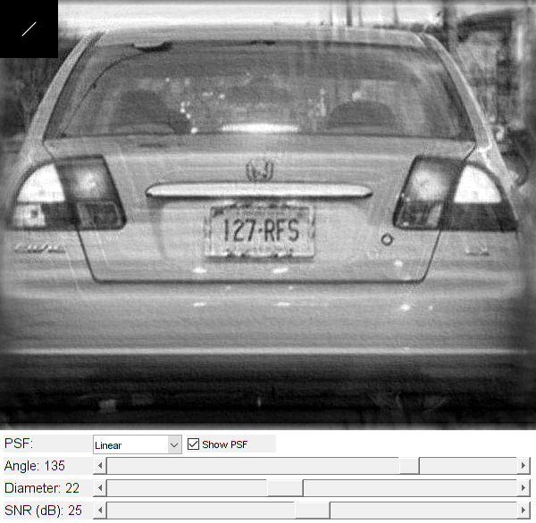

Wiener Deconvolution for Image Deblurring
Sample shows how DFT can be used to perform Weiner deconvolution of an image with user-defined point spread function (PSF).
Use controls to adjust PSF parameters, and swtich between linear/cirular PSF.
See also: deconvwnr, https://www.mathworks.com/help/images/image-restoration-deblurring.html
Sources:
function varargout = weiner_deconvolution_demo_gui(im) % load grayscale image if nargin < 1 im = fullfile(mexopencv.root(), 'test', 'licenseplate_motion.jpg'); if exist(im, 'file') ~= 2 disp('Downloading image...') url = 'https://cdn.rawgit.com/opencv/opencv/3.2.0/samples/data/licenseplate_motion.jpg'; urlwrite(url, im); end img = cv.imread(im, 'Grayscale',true); elseif ischar(im) img = cv.imread(im, 'Grayscale',true); else img = im; end img = single(img) / 255; % convert 8-bit to floating-point precision % create the UI app = initApp(img); h = buildGUI(app); if nargout > 0, varargout{1} = h; end end function app = initApp(img) %INIT_APP Initialize options and state structure app = struct(); % options app.snr = 25; % signal/noise ratio in dB app.angle = 135; % blur angle in degrees [0,180] app.d = 22; % blur diameter [1,ksz] app.ksz = 65; % kernel size % process image and compute its DFT app.img0 = img; app.img = blur_edge(img); app.IMG = cv.dft(app.img, 'ComplexOutput',true); end function img = blur_edge(img, d) %BLUR_EDGE Blur image edges to reduce ringing effect in deblurred image % % img = blur_edge(img) % img = blur_edge(img, d) % % ## Input % * __img__ input image % * __d__ gaussian size, default 31 % % ## Output % * __img__ output image % % See also: edgetaper % if nargin < 2, d = 31; end img_blur = cv.copyMakeBorder(img, [d d d d], 'BorderType','Wrap'); img_blur = cv.GaussianBlur(img_blur, 'KSize',[d d]*2+1, 'SigmaX',-1); img_blur = img_blur(d+1:end-d, d+1:end-d); [h,w] = size(img); [y,x] = ndgrid(1:h, 1:w); D = min(cat(3, x, w-x+1, y, h-y+1), [], 3); a = min(single(D)/d, 1); img = img.*a + img_blur.*(1-a); end function kern = motion_kernel(ang, d, sz) %MOTION_KERNEL Create linear motion filter % % kern = motion_kernel(ang, d) % kern = motion_kernel(ang, d, sz) % % ## Input % * __ang__ linear motion angle % * __d__ linear motion length % * __sz__ kernel size, default 65 % % ## Output % * __kern__ kernel % % See also: fspecial (motion) % if nargin < 3, sz = 65; end sz2 = floor(sz / 2); A = [cos(ang) -sin(ang); sin(ang) cos(ang)]; A(:,3) = [sz2; sz2] - A*[(d-1)*0.5; 0]; kern = ones(1,d,'single'); kern = cv.warpAffine(kern, A, 'DSize',[sz sz], 'Interpolation','Cubic'); end function kern = defocus_kernel(d, sz) %DEFOCUS_KERNEL Create circular defocus kernel % % kern = defocus_kernel(d) % kern = defocus_kernel(d, sz) % % ## Input % * __d__ circular motion diameter % * __sz__ kernel size, default 65 % % ## Output % * __kern__ kernel % % See also: fspecial (gaussian) % if nargin < 2, sz = 65; end kern = zeros(sz,sz,'uint8'); kern = cv.circle(kern, [sz sz], d, ... 'Color',255, 'Thickness','Filled', 'LineType','AA', 'Shift',1); kern = single(kern) / 255; end function onChange(~,~,h,app) %ONCHANGE Event handler for UI controls % retrieve current values from UI controls psf_type = get(h.pop, 'Value'); psf_viz = get(h.cbox, 'Value') == get(h.cbox, 'Max'); app.snr = round(get(h.slid(1), 'Value')); app.d = round(get(h.slid(2), 'Value')); app.angle = round(get(h.slid(3), 'Value')); set(h.txt(1), 'String',sprintf('SNR (dB): %d', app.snr)); set(h.txt(2), 'String',sprintf('Diameter: %d', app.d)); set(h.txt(3), 'String',sprintf('Angle: %d', app.angle)); if psf_type == 3 % show original blurred image res = app.img0; else % linear/cirular PSF if psf_type == 1 psf = motion_kernel(deg2rad(app.angle), app.d, app.ksz); else psf = defocus_kernel(app.d, app.ksz); end % deconvolution noise = 10^(-0.1 * app.snr); [kh,kw] = size(psf); PSF = zeros(size(app.img), class(app.img)); PSF(1:kh, 1:kw) = psf / sum(psf(:)); PSF = cv.dft(PSF, 'ComplexOutput',true, 'NonzeroRows',kh); PSF = bsxfun(@rdivide, PSF, sum(PSF.^2, 3) + noise); res = cv.mulSpectrums(app.IMG, PSF); res = cv.dft(res, 'Inverse',true, 'Scale',true, 'RealOutput',true); res = circshift(res, floor(-[kh kw]/2)); % visualize PSF kernel (overlaid on top of output image) if psf_viz res(1:kh,1:kw) = psf; end end % show result set(h.img, 'CData',res); drawnow; end function h = buildGUI(app) %BUILDGUI Creates the UI % parameters sz = size(app.img0); sz(2) = max(sz(2), 300); % minimum figure width % build the user interface (no resizing to keep it simple) h = struct(); h.fig = figure('Name','Deconvolution', ... 'NumberTitle','off', 'Menubar','none', 'Resize','off', ... 'Position',[200 200 sz(2) sz(1)+105-1]); if ~mexopencv.isOctave() %HACK: not implemented in Octave movegui(h.fig, 'center'); end h.ax = axes('Parent',h.fig, 'Units','pixels', 'Position',[1 105 sz(2) sz(1)]); if ~mexopencv.isOctave() h.img = imshow(app.img0, 'Parent',h.ax); else %HACK: https://savannah.gnu.org/bugs/index.php?45473 axes(h.ax); h.img = imshow(app.img0); end h.txt(1) = uicontrol('Parent',h.fig, 'Style','text', ... 'FontSize',11, 'HorizontalAlignment','left', ... 'Position',[5 5 100 20], 'String','SNR (dB):'); h.txt(2) = uicontrol('Parent',h.fig, 'Style','text', ... 'FontSize',11, 'HorizontalAlignment','left', ... 'Position',[5 30 100 20], 'String','Diameter:'); h.txt(3) = uicontrol('Parent',h.fig, 'Style','text', ... 'FontSize',11, 'HorizontalAlignment','left', ... 'Position',[5 55 100 20], 'String','Angle:'); h.txt(4) = uicontrol('Parent',h.fig, 'Style','text', ... 'FontSize',11, 'HorizontalAlignment','left', ... 'Position',[5 80 100 20], 'String','PSF:'); h.slid(1) = uicontrol('Parent',h.fig, 'Style','slider', ... 'Value',app.snr, 'Min',0, 'Max',50, 'SliderStep',[1 5]./(50-0), ... 'Position',[105 5 sz(2)-105-5 20]); h.slid(2) = uicontrol('Parent',h.fig, 'Style','slider', ... 'Value',app.d, 'Min',1, 'Max',50, 'SliderStep',[1 5]./(50-1), ... 'Position',[105 30 sz(2)-105-5 20]); h.slid(3) = uicontrol('Parent',h.fig, 'Style','slider', ... 'Value',app.angle, 'Min',0, 'Max',180, 'SliderStep',[1 10]./(180-0), ... 'Position',[105 55 sz(2)-105-5 20]); h.pop = uicontrol('Parent',h.fig, 'Style','popupmenu', ... 'Position',[105 80 100 20], 'String',{'Linear','Circular','-None-'}); h.cbox = uicontrol('Parent',h.fig, 'Style','checkbox', ... 'Position',[210 80 100 20], 'Value',1, 'String','Show PSF'); % hook event handlers, and trigger default start set([h.slid, h.pop, h.cbox], 'Callback',{@onChange,h,app}, ... 'Interruptible','off', 'BusyAction','cancel'); onChange([],[],h,app); end